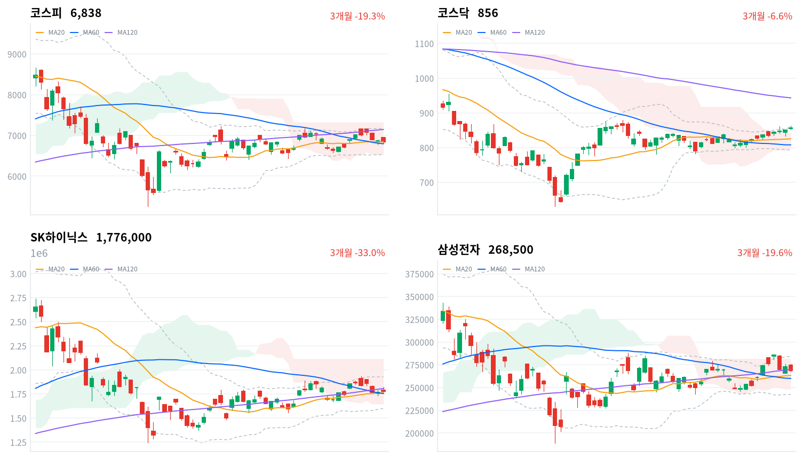

반도체 호재로 높게 출발한 코스피는 외국인과 기관의 매도에 오후 들어 하락으로 돌아섰고, 아시아 네 지수가 모두 오른 날 혼자 내렸다. 외국인은 사흘째 2조원 넘게 팔았다(당일 잠정).
국고채가 이틀째 미국과 반대로 내렸는데도 매도가 줄지 않았다. 우리는 매도에서 대형 반도체 고유 요인의 몫이 커졌다고 판단한다. 코스피 노출은 유지하고 반도체 대형주 되돌림은 미국 8월 PCE와 마이크론 실적을 본 뒤로 미룬다.
코스피는 0.48% 내린 6,838로 마감했다. 전일 미국 반도체 강세를 받아 전 거래일보다 1% 넘게 높은 6,943에서 출발했지만, 장 초반 고가 6,966을 찍은 뒤 오후 내내 밀려 하루 범위의 바닥 근처에서 끝났다. 외국인은 코스피에서 2조478억원을 순매도해 사흘째 2조원 넘게 팔았고, 기관도 7,833억원을 팔았다(당일 잠정). 아시아 네 지수가 모두 오른 날 코스피만 내렸다. 반도체 안에서도 SK하이닉스는 올랐고 삼성전자는 내렸다.
채권시장은 오늘도 미국 금리를 따라가지 않았다. 국고채 10년물은 6.9bp 내려 이틀째 하락했다. 신용 위험의 값은 내리지 않았다. 회사채 AA- 3년물과 국고채 3년물의 금리차는 69.2bp로 1.3bp 벌어졌고, 최근 2년(534거래일) 가운데 이보다 넓었던 날이 29일뿐이다. 무위험 금리가 내려오는데도 주식에서 외국인 매도가 이어진 것은, 매도의 이유가 할인율 하나가 아니라는 신호로 본다.
우리는 외국인 매도에서 대형 반도체 고유의 몫이 커졌다고 판단한다. 국고채가 이틀 연속 미국과 반대로 내렸는데도 매도가 멈추지 않았고, 지수를 끌어내린 쪽은 여전히 삼성전자 같은 대형주였다. 전자신문은 삼성전자와 SK하이닉스의 자사주 매입이 10월 초·중순 끝날 것으로 봤다. 9월 내내 외국인과 개인이 판 물량을 받아 온 수요가 곧 빠진다는 뜻이다. 머니투데이가 전한 대로 미국 30년물 금리가 24년 만의 최고로 올라 글로벌 할인율 자체가 외국인 매도를 이끌고 있을 수도 있으나, 국고채가 따로 움직인 이틀을 보면 대형주 고유 요인 쪽에 무게를 둔다. 두 설명은 미국 10년물이 9월 25일 수준(5.181%) 아래로 내려오는 날 외국인 순매도가 1조원 미만으로 줄어드는지에서 갈린다.
코스피 노출은 다음 세션까지 유지하고 반도체 대형주 되돌림은 계속 미룬다. 오늘 지수 등락에는 큰 무게를 두지 않는다. 60일선은 종가로 지켰고, 하락은 새 악재가 아니라 사흘째 이어진 외국인 매도에 기관이 가세한 결과다. 오늘은 새 상품을 대지 않는다. 기다리는 것은 9월 30일 밤(한국시간) 미국 8월 PCE 뒤 미국 10년물의 방향, 10월 1일 새벽 마이크론 실적과 가이던스, 같은 날 나오는 9월 수출입동향의 반도체 수출이다. 받쳐 주던 자사주 매입 수요가 곧 빠지는 만큼, 금리가 멈추기 전에 대형주 되돌림을 서두를 이유는 없다.
코스피가 60일 이동평균(6,795) 아래에서 마감하면 이 판단을 다시 본다. 오늘 종가보다 약 0.6% 낮은 자리이고, 바로 아래 일목 기준선과 거의 겹친다. 오늘 장중 저가는 그 선 위에서 멈췄다. 종가로 이 선을 내주면 매도가 대형 반도체 밖으로 번졌다고 보고, 노출 유지의 전제를 거둔다.
9월 29일 판단은 유효하다. 그날 정한 무효화 선인 코스피 6,808은 종가로 지켜졌고 여유는 30포인트였으며, 장중 저가도 그 선 위였다. 기다린 조건은 아직 오지 않았다. 미국 8월 PCE와 9월 수출입동향은 이 보고서 마감 뒤에 나오고, 외국인 순매도는 2조원대로 기준을 크게 넘었다. 노출 등급은 유지하되 두 가지를 고친다. 무효화 선을 오늘의 60일선으로 옮기고, 매도 해석의 무게를 금리 이월에서 대형주 고유 요인 쪽으로 한 걸음 더 옮긴다.
전일 미국 3대 지수는 9월 29일(현지) 소폭 내렸다(S&P500 -0.17%, 나스닥 -0.09%, 다우 -0.26%). 오늘 아시아는 모두 올랐다. 닛케이가 1.94% 뛰었고 대만가권(+0.65%)·항셍(+0.37%)·상해종합(+0.31%)도 올랐다. 네 지수 평균은 0.82% 상승이었고, 코스피는 이보다 1.3%포인트 뒤처졌다.
시가는 전 거래일 종가 6,871보다 73포인트 높은 6,943으로, 밤사이 미국 반도체 강세가 개장가에 먼저 반영됐다. 머니투데이는 필라델피아 반도체지수가 1.32%, SK하이닉스 ADR이 2.62% 올랐다고 전했다. 한국 정규장 동안 미국 선물은 약했다(S&P500 선물 -0.11%, 나스닥100 선물 -0.36%). 개장 갭을 지킬 도움은 밖에서 오지 않았다.
코스피는 하루 범위의 아래쪽 15% 안에서 끝났고, 코스닥은 범위 한가운데보다 조금 아래에서 끝났지만 상승은 지켰다. 원/달러 환율은 개장 직후 1,351원이 저점, 오전 10시 1,359원이 고점이었고 1,354원으로 마감했다.
반도체 호재로 열고 외국인·기관 매도로 닫은 날이다. 경제타임스는 코스피가 6,960선을 찍은 뒤 사흘째 내렸다고 전했고, 머니투데이는 외국인과 기관의 매도를 미국 국채금리 상승의 여파로 봤다. 오후 반락 동안에도 코스닥은 상승을 지켰고, 알래스카 LNG 투자 발표 기대로 강관주가 뛰는 등 중소형주의 개별 재료는 살아 있었다. 장중 투자자별 흐름과 시간외 거래 자료가 없어 매도가 어느 시각에 몰렸는지는 확인하지 못했다.
코스피는 연휴 뒤 사흘 내리 밀렸지만 60일선 위는 지키고 있다. 오늘 종가는 20일선(6,848)을 10포인트 밑돌고 60일선보다 43포인트 위라, 두 이동평균 사이의 좁은 구간에 갇혔다. 최근 20거래일 고점(7,172)과는 5% 가까이 벌어졌다. 코스닥은 반대로 나흘째 올라 볼린저 상단 바로 아래까지 왔다.
| 지수 | 종가 | 등락률 | 시가 | 고가 | 저가 | 전일 종가 |
|---|---|---|---|---|---|---|
| 코스피 | 6,838.04 | -0.48% | 6,943.47 | 6,965.64 | 6,818.39 | 6,870.81 |
| 코스닥 | 855.91 | +0.72% | 854.78 | 862.50 | 852.10 | 849.80 |
높게 출발한 코스피는 개장가가 사실상 하루 고점이었다. 오전 내내 밀려 11시 반 무렵 6,900선을 내줬고, 오후에는 20일선 아래에서 좁게 오르내리다 저가 6,818까지 내려갔지만 60일선에는 닿지 않았다. 지수를 끌어내린 것은 삼성전자와 금융주였다(삼성전자 -1.47%, 신한지주 -3.98%, KB금융 -2.71%, 하나금융지주 -3.92%). SK하이닉스(+0.62%)와 SK스퀘어(+1.88%)가 버텼지만 하락을 되돌리지는 못했다.
대형 반도체와 금융주 밖은 오히려 강했다. 조선(삼성중공업 +1.91%)과 에너지·화학(SK이노베이션 +1.99%, 한화솔루션 +4.31%)이 올랐고, 두산에너빌리티(+2.38%)도 올랐다. 전날 강했던 부품주는 되밀렸다(LG이노텍 -3.59%, 삼성전기 -0.98%). 중소형주에는 재료가 돌았다. 알래스카 LNG 투자 발표 기대로 LNG선 엔진주가 올랐고(한화엔진 +5.26%), 전고체 배터리 소재 기대로 화학주가 뛰었다(이수스페셜티케미컬 +17.21%). 태양광·에너지 쪽도 강했다(OCI홀딩스 +3.23%, HD현대에너지솔루션 +5.77%). TCC스틸은 24.73% 급등했지만 확인된 재료는 없다. 지수는 무거운 대형주 몇 종목 때문에 내렸지만, 오른 업종도 적지 않았다.
코스닥은 오전 10시 861까지 올랐다가 오후에 되밀렸지만 상승으로 마감했다. 외국인은 코스닥에서도 팔았지만(당일 잠정) 지수는 일목 구름 위에서 나흘째 올랐다. 코스피 대형주 매도가 중소형주로 번지지 않은 사흘째 날이다.

코스피·코스닥·SK하이닉스·삼성전자 3개월 일봉에 이동평균(20·60·120)·볼린저밴드·일목균형표 구름대를 겹쳐 그렸다. 상승 캔들은 녹색, 하락 캔들은 적색이다.
코스피는 20일선을 살짝 밑돌고 60일선(6,795) 위에서 마감했으며, 일목 구름 안에 있다. 20일선을 되찾으면 일목 전환선(6,885)이 다음 저항이고, 60일선을 종가로 내주면 일목 기준선(6,790)이 가장 가까운 지지선이다.
코스닥은 볼린저 상단(858)에 바짝 붙었고 일목 구름 위에 있다. 오늘 고가이기도 한 20일 고점(862.5)을 넘으면 60일 고점(879)까지 열리고, 구름 상단(843)을 내주면 20일선(825)이 다음 지지선이다.
SK하이닉스(177만6천원)는 20일선·60일선 위, 120일선(181만원) 아래에 있고 일목 구름 안이다. 120일선을 되찾으면 볼린저 상단(193만원)까지 열리고, 일목 기준선(175만원)을 내주면 구름 하단(165만원)이 다음 지지선이다.
삼성전자(26만8,500원)는 120일선(27만원) 바로 아래로 밀렸고 일목 구름 안에 있다. 120일선을 되찾으면 구름 상단(28만2천원)이 다음 저항이고, 20일선(26만3천원)을 내주면 60일선(26만원)이 다음 지지선이다.
위 레벨은 이동평균·볼린저밴드·일목균형표와 스윙 고저를 기계적으로 계산한 값이며 투자 권유가 아니다.
| 주체 | 순매수(억원) |
|---|---|
| 개인 | +11,795 |
| 외국인 | -20,478 |
| 기관 | -7,833 |
| 주체 | 순매수(억원) |
|---|---|
| 개인 | +155 |
| 외국인 | -685 |
| 기관 | +488 |
외국인은 코스피에서 2조478억원을 순매도했다(전 거래일 2조9,922억원 순매도, 당일 잠정). 연휴 뒤 사흘 합계는 8조3,082억원이다. 개인은 1조1,795억원을 사들였고(전 거래일 1조2,447억원 순매수), 기관은 7,833억원 순매도로 돌아섰다(전 거래일 1,041억원 순매수).
오늘은 수급과 지수가 같은 쪽으로 움직였다. 앞선 이틀은 외국인이 3조원 안팎을 팔아도 지수 낙폭이 작았지만, 오늘은 기관까지 매도에 가세하자 개장 갭을 모두 내주고 하락으로 끝났다. 외국인 매도 규모 자체는 사흘째 줄었다. 종목별 투자자 자료가 없어 매도가 어느 종목에 몰렸는지는 보도로만 확인된다. 두 대형주의 자사주 매입이 끝나는 10월 초·중순 뒤에도 외국인 매도가 같은 크기로 이어지는지가 다음 확인점이다.
코스닥에서는 외국인이 685억원을 순매도했지만(전 거래일 1,305억원 순매도) 규모는 절반 가까이 줄었고, 기관이 488억원을 사들였다(당일 잠정). 외국인 매도의 무게는 여전히 코스피 대형주에 있다.
장중 누적 수급과 프로그램 매매는 받을 수 있는 자료가 없어 싣지 않는다.
| 순위 | 종목/ETF | 구분 | 거래대금 | 비고 |
|---|---|---|---|---|
| 1 | SK하이닉스 | 개별주 | 5.27조원 | - |
| 2 | 삼성전자 | 개별주 | 4.18조원 | - |
| 3 | 반도체 테마 ETF | 테마·롱 | 1.77조원 | 28종 합산 |
| 4 | 삼성전자우 | 개별주 | 0.94조원 | - |
| 5 | KODEX CD금리액티브(합성) | 단기금리·현금성 | 0.93조원 | - |
| 6 | 삼성전기 | 개별주 | 0.72조원 | - |
| 7 | SK스퀘어 | 개별주 | 0.49조원 | - |
| 8 | SK하이닉스 레버리지 | 레버리지·롱 | 0.27조원 | 5종 합산 |
| 9 | HD현대일렉트릭 | 개별주 | 0.25조원 | - |
| 10 | 한화솔루션 | 개별주 | 0.21조원 | - |
단위 백만원 원본을 조 단위로 환산했다. 같은 기초자산 ETF는 방향별로, 같은 테마 섹터 ETF는 테마별로 묶고 지수·해외 ETF는 제외했다.
거래는 여전히 반도체 대형주 두 종목에 몰렸다. SK하이닉스와 삼성전자의 거래대금은 9.45조원으로, 반도체 테마 ETF 28종을 합친 1.77조원의 5배를 넘는다. 매매는 바스켓보다 개별 대형주에 몰렸다. 반도체 ETF의 거래가 활발했던 것은 WICS 반도체 섹터가 오른 가격과 같은 쪽이지만, 거래대금만으로는 매수와 매도 중 어느 쪽이 컸는지 알 수 없다.
삼성전자우가 4위에 올랐다. 큰 폭으로 내린 날 거래가 붙었고, 개인 고수익 투자자들이 오전에 이 종목을 사들였다는 보도가 있다(아래 특징주). KODEX CD금리액티브(합성)는 단기금리를 따르는 자금 대기용 상품이라 방향성 거래와 결이 다르고, 초단기채 상품으로 자금이 몰린다는 보도와 같은 쪽이다. 한화솔루션은 10위에 들며 올랐고, HD현대일렉트릭(-2.79%)은 9위에서 내렸다.
WICS 12개 섹터 가운데 6개가 올랐다. 반도체(+1.09%)가 1위였고 조선(+0.94%)·건설(+0.82%)·2차전지(+0.67%)가 뒤를 이었다. 은행(-3.11%)이 가장 크게 내렸고 자동차(-0.99%)·증권(-0.72%)도 약했다. 1주로 넓히면 반도체(+5.51%)만 오르고 나머지 11개가 내린 그림은 그대로다.
네이버 업종 기준으로 반도체와반도체장비는 0.18% 내렸지만 172종목 가운데 104종목이 올랐다. 삼성전자의 하락이 업종 수익률을 눌렀지만 반도체 안의 상승은 넓었다. WICS 반도체가 오른 것과 방향이 다른 것은 두 분류의 구성과 비중이 달라서다.
반도체 밖에서 폭넓게 오른 업종은 소재와 중후장대 쪽이다. 화학(+2.05%)은 122종목 가운데 75종목, 철강(+1.51%)은 55종목 가운데 40종목이 올랐다. 자동차부품(+2.83%)은 상승률은 높았지만 154종목 가운데 73종목만 올라, 한온시스템 같은 개별 종목이 업종 수익률을 끌어올린 좁은 상승이다. 금융주는 대형 은행지주가 일제히 내려 WICS 기준 최하위였다.
삼성전자 보통주와 우선주가 함께 내렸다(삼성전자 -1.47%, 삼성전자우 -4.31%). 전자신문은 두 대형주의 자사주 매입이 막바지에 이르러 곧 수급 버팀목이 빠진다고 전했다. 재경일보는 삼성전자우가 뚜렷한 악재 없이 매물이 나오며 밀렸다고 전했고, 우선주 자체의 하락 원인은 확인된 재료가 없다. 서울경제는 미래에셋증권 고수익 투자자들이 오전에 삼성전자우를 가장 많이 순매수했다고 전했다.
SK 반도체 쪽은 올랐다(SK하이닉스 +0.62%, SK스퀘어 +1.88%). 머니투데이는 전일 필라델피아 반도체지수 상승과 SK하이닉스 ADR 강세, 앤트로픽의 10년 AI 인프라 지출 계획이 반도체 심리를 받쳤다고 전했다. 같은 반도체 대형주인데도 삼성전자와 방향이 갈려, 오늘 매도가 반도체 전체보다 특정 종목에 몰렸다는 해석에 힘을 싣는다.
화학 소재주가 급등했다(이수스페셜티케미컬 +17.21%, 후성 +6.23%). 남도일보와 핀포인트뉴스는 전고체 배터리 소재인 황화리튬의 상업 생산 기대가 부각되며 2차전지 소재주가 함께 올랐다고 전했다. 두 종목의 개별 공시는 확인되지 않았다.
삼화콘덴서는 5.27% 내렸다. 재경일보는 뚜렷한 개별 악재 없이 단기 차익실현 매물이 나왔다고 전했고, 확인된 재료는 없다.
한온시스템은 10.0% 올랐다. 남도일보와 EBN은 삼성증권이 목표주가를 올리면서 A/S·로보택시·데이터센터 열관리 같은 신사업 기대와 3분기 영업이익이 시장 전망을 웃돌 것이라는 전망을 내놨다고 전했다.
국고채 금리는 이틀째 내렸다. 3년물이 6.5bp, 10년물이 6.9bp 내려 두 만기의 금리차는 39.6bp로 거의 그대로였고, 최근 2년(534거래일)의 한가운데쯤에 있다. 신용물 금리는 덜 내려 회사채 스프레드가 벌어졌다. 원/달러 환율은 1,354원으로 마감했다.
| 지표 | 금리 | 전일比(bp) | 기준일 |
|---|---|---|---|
| 국고채 3년 | 4.011% | -6.5 | 2026-09-30 |
| 국고채 10년 | 4.407% | -6.9 | 2026-09-30 |
| CD 91일 | 3.22% | 0.0 | 2026-09-30 |
| 회사채 AA- 3년 | 4.703% | -5.2 | 2026-09-30 |
| 한국은행 기준금리 | 3.00% | +25.0(전월比) | 2026-08 |
기준금리는 8월 결정 기준이다.
미국 장기금리는 9월 29일(현지)에도 높은 자리에 머물렀다. 머니투데이는 미국 30년물이 5.621%로 24년 만의 최고였다고 전했다. 국고채는 그 사이 이틀째 미국과 반대로 내렸다. 두 시장의 기준일이 하루 어긋난 비교이지만, 국내 금리가 오늘 주식 매도의 원인으로 작동하지 않았다는 점은 분명하다.
국고채 3년물은 기준금리보다 101.1bp 높아, 최근 2년 가운데 넓은 쪽 15% 안에 있다. 이 격차에는 정책 경로 기대와 기간프리미엄이 섞여 있다. CD 91일물은 3.22%로 움직이지 않아 단기 자금시장은 조용했다.
신용 쪽은 결이 달랐다. 회사채 AA- 3년물은 5.2bp 내려 국고채 3년물보다 덜 내렸고, 신용 스프레드는 69.2bp로 이틀째 벌어졌다. 국고채 강세는 신용물까지 고르게 번지지 않았다. 채권시장의 신용 경계는 한 단계 더 높아졌다.
머니투데이는 10월 1일 본회의에서 처리될 예정이던 의무공개매수 도입안이 자산운용사들의 공동성명 뒤 상정 보류됐다고 단독 보도했다. 국회의 공식 발표는 확인하지 못했다. 아시아경제에 따르면 운용사들은 인수자가 지배주주 지분을 먼저 사들이는 선행매수를 허용한 점을 문제 삼고, 모든 주주가 같은 비율로 파는 비례적 공개매수를 대안으로 냈다.
이 법은 멀티플 경로로 주가에 닿는다. 경영권 프리미엄을 일반주주가 얼마나 나눠 받느냐가 지배구조 할인의 크기를 정하기 때문이다. 처리가 늦어지면 지배주주 지분이 높고 인수합병 가능성이 있는 중소형 지주·저PBR 종목의 기대가 늦춰진다. 오늘 이 재료에 대한 가격 반응은 확인되지 않았다. 정무위원회·법제사법위원회의 재논의 일정은 미확정이고, 선행매수 조항이 고쳐지는지가 다음 확인점이다.
머니투데이는 로이터를 인용해 트럼프 대통령이 약 73조원 규모의 알래스카 LNG 개발 사업을 포함한 한국의 대미 투자 계획을 발표할 예정이라고 전했다. 뉴스핌은 백악관 일정이 한국시간 10월 1일 새벽 4시 30분이고, 한국 정부는 사업성 문제로 이 사업을 추후 협의 과제로 남겨 둔 상태라고 전했다.
주가에 닿는 경로는 이익과 수급 두 갈래다. 강관·밸브·LNG선 엔진 제조사는 수주 기대가 붙고, 발표 전 테마성 매수가 먼저 들어왔다. 오늘 네이버 철강 업종은 1.51% 오르며 폭넓게 상승했고 한화엔진도 5.26% 올라 보도 방향과 맞는다. 반대로 투자 재원 부담과 정부 협의 전 일방 발표라는 정책 리스크가 남는다. 발표 금액·구속력과 한국 정부의 입장이 10월 1일 개장 전에 드러난다.
매일경제에 따르면 9월 코스피 상장사의 자사주 취득 공시는 5,685억원이고, KT&G·제일기획·셀트리온이 소각을 발표했다. 경로는 수급에서 멀티플로 이어진다. 소각은 주당가치를 높이고, 올 3월 시행된 개정 상법이 소각을 의무화해 발표가 늘고 있다. 같은 경로가 반대로 작동하는 곳이 삼성전자와 SK하이닉스다. 매입이 끝나면 두 종목의 매수 주체가 빈다. 다음 확인점은 완료 공시와 그 뒤 외국인 순매도 규모다.
한국은행 기준금리는 8월 인상 뒤 3.00%이고, 오늘 새 결정은 없다. 국내 금리를 움직일 다음 재료는 밖에 있다. 9월 30일 밤(한국시간) 미국 8월 PCE가 미국 10년물의 방향을 정하고, 10월 1일 산업통상자원부의 9월 수출입동향이 반도체 수출의 힘을 보여준다.
美국채금리 한파에 외인·기관 3조 이탈…"반도체 주목"머니투데이 · 9월 30일
미국 30년물 국채금리가 24년 만에 최고인 5.621%까지 올라가며 코스피가 6838.04로 하락 마감했다. 외국인과 기관투자자는 이날 코스피에서 3조원을 순매도했으며, 뉴욕증시도 미국 기준금리 추가 인상 전망과 중동 지정학적 불안감 속에 약세를 나타냈다. 다만 증권가는 AI 인프라 투자 확대 전망 속에 반도체 부문의 강세가 시장을 견인할 수 있다고 보고 있다. 마이크론·샌디스크 등 해외 반도체 기업들도 상승했으며, 앤트로픽의 기업공개 자료에 향후 10년간 5180억달러 규모의 AI 인프라 장기 지출 계획이 포함된 점이 투자심리를 지탱하는 요인으로 작용하고 있다. KRX 종가 기준 SK하이닉스는 0.62% 올랐다.
고금리에도 CP 대신 회사채?…한국금융지주의 차환 셈법조선비즈 · 9월 30일
한국금융지주가 기업어음(CP) 3000억원을 갚기 위해 2500억원 규모의 회사채 발행을 결정했다. 금리 희망범위는 2년물 4.561~5.161%, 3년물 4.659~5.259%이고, 수요예측에 따라 최대 5000억원까지 늘릴 수 있다. CP 금리가 3.05%에서 3.38%로 완만하게 오른 반면 3년물 회사채 금리는 3.428%에서 4.755%로 급등해 이자 부담이 커진다. 회사채 차환은 만기가 긴 채권으로 차입구조를 안정시키고 단기자금 차환 부담을 줄이려는 조치다. 한국투자증권의 순자본비율은 4151.93%로 규제기준(100%)을 크게 웃돌아 재무 안정성에 즉각적인 영향은 없을 전망이다.
횡보장에 고금리까지… 갈곳 잃은 투자자는 '이 ETF'로 피신한다머니투데이 · 9월 30일
증시가 방향을 잡지 못하고 글로벌 금리가 오르면서 초단기채권 ETF에 자금이 몰리고 있다. ACE 머니마켓액티브와 SOL 초단기채권액티브는 지난주 순자산 1조원을 각각 돌파했고, 1Q 머니마켓액티브도 1조원 진입을 눈앞에 뒀다. 이들 상품은 만기가 짧은 채권과 기업어음 등으로 구성돼 연 3~4% 수준의 이자 수익을 추구하는 '파킹형' 자산이다. 국내 투자자는 미 국채 0~3개월 만기 ETF(SGOV)도 2억8991만달러어치 순매수했다. 코스피가 7000선 안착에 거듭 실패하고 장기 국고채 금리가 수년 만의 최고치를 경신하면서 자금이 초단기채로 피신하고 있다.
9월 자사주 매입 5600억 … '밸류업 시계' 다시 돈다매일경제 · 9월 30일
코스피 상장사들의 자사주 매입·소각이 확대되고 있다. 9월 한 달간 18곳의 상장사가 총 5685억원 규모의 자기주식 취득을 공시했다. KT&G는 3600억원, 제일기획은 기존 보유분 2800억원과 향후 1년 내 추가 취득분 1400억원을 합해 총 4200억원 규모를 소각할 예정이고, 셀트리온도 1000억원 규모 자사주 소각을 발표했다. 자사주 소각은 발행주식 수를 줄여 주당순이익 증가와 저평가 해소 신호를 주는 직접적인 주주환원 수단이다. 올 3월 시행된 개정 상법이 새로 취득한 자사주는 1년 내, 기존 보유분은 1년6개월 내 소각을 의무화하면서 소각 결정이 늘고 있다.
트럼프 깜짝 발표 전망에…알래스카 LNG 투자 수혜주 훨훨머니투데이 · 9월 30일
트럼프 미국 대통령이 한국의 알래스카 LNG 개발 사업 투자 계획을 발표할 것이라는 외신 보도에 관련 수혜주가 강세를 보였다. 로이터 통신은 전날 트럼프 대통령이 약 73조원 규모의 알래스카 LNG 개발 사업을 포함한 한국의 대미 투자 계획을 발표할 것이라고 보도했다. 가스관 제조 기업 KBI동양철관은 29.97% 오른 상한가 1483원으로 마감했다. 약 1300㎞ 길이의 가스관 건설에 대규모 강관을 공급할 것이라는 기대다. 강관 제조업체 하이스틸·휴스틸·넥스틸, LNG 설비 밸브를 만드는 화성밸브, 쇄빙 LNG 운반선 엔진을 만드는 한화엔진, 포스코인터내셔널도 1~19% 올랐다.
"상법 개정 효과 없애는 꼴"…의무공개매수 '날치기' 추진에 운용사 반발아시아경제 · 9월 30일
국내외 자산운용사 18곳이 의무공개매수제도 도입안의 본회의 처리 보류를 촉구했다. 운용사들은 제도 자체에는 찬성하지만 지배주주 지분을 먼저 인수하는 '선행매수'를 허용한 점이 문제라고 지적했다. 법안은 50%+1주까지만 공개매수를 강제해, 지배주주 지분을 장외에서 먼저 사들인 뒤 일반주주 지분만 소량 인수해도 의무 조건을 채울 수 있다. 코스피200 기업의 평균 지배주주 지분이 44%이고 2015년 이후 M&A 35건 중 15건이 지배주주 지분 50% 이상이어서, 일반주주가 공개매수에 전혀 참여하지 못할 수 있다는 우려다. 운용사들은 '비례적 공개매수'를 대안으로 제시했다.
외국인·개인 물량 쏟아내는데…삼전닉스 자사주 매입 막바지, '증시 버팀목' 어쩌나전자신문 · 9월 30일
삼성전자와 SK하이닉스가 진행 중인 자사주 매입이 10월 초·중순 마무리를 앞두면서 증시 수급 구도가 바뀔 전망이다. 삼성전자는 예정 물량의 93.46%, SK하이닉스는 71.25%를 취득했고, 최근 매입 속도로는 각각 10월 초와 중순에 끝날 것으로 예상된다. 9월 중 외국인과 개인이 두 종목에서 34조원 넘게 순매도하는 동안 자사주 매입을 포함한 기타법인이 32조원 이상을 순매수하며 수급을 떠받쳤다. 매입이 끝나면 이 대규모 매수 물량이 사라질 수 있어, 주가는 실적과 메모리 업황에 더 민감해질 전망이다. 10월 초 마이크론 실적과 10월 중순 두 회사의 3분기 실적이 핵심 변수로 꼽힌다.
"다시 반도체 주목할 때"…지지부진 K증시 반등 시킬 호재는 '이것'머니투데이 · 9월 30일
코스피가 9월 30일 전일 대비 0.48% 내린 6838.04로 마감했다. 미국 국채 금리 상승으로 뉴욕증시가 약세를 보인 여파가 국내로 이어졌다. 다만 필라델피아 반도체지수는 1.32% 올랐고 SK하이닉스 ADR과 마이크론도 각각 2.62%, 1.05% 올라 반도체 업종은 버텼다. 증권가는 11월로 미뤄진 앤트로픽 상장과 메타의 AI에이전트 '뮤즈' 출시가 반도체 수요를 끌어올릴 것으로 기대한다. KB증권 연구원은 장기금리가 안정되면 반도체에 주목할 시점이라고 평가했고, 키움증권 연구원은 마이크론 실적이 AI와 메모리 업종이 높은 금리 부담을 견딜 수 있는지 보여줄 지표라고 봤다.
'삼전닉스 더 담아야하는데...' 철옹성 유럽도 K증시에 '러브콜'머니투데이 · 9월 30일
올해 삼성전자와 SK하이닉스 주가 급등으로 국가·종목별 투자 한도에 도달한 유럽 자산운용사들이 한국 시장에 관심을 기울이고 있다. 유럽권 9개국 외국인 투자자의 한국 상장주식 보유액은 지난달 기준 702조원으로 전년 동기 대비 137.2% 늘어, 코스피 상승률 114.1%를 웃돌았다. 한때 사업성이 낮아 현대증권·신한금융투자 등이 철수했던 유럽 시장도 최근 진입로가 열리고 있다. 런던에 남은 한국 증권사들은 기관 대상 브로커리지, 인프라·기업금융 딜 발굴, ETF 시장조성 등 각자의 전략으로 공략하고 있다. 유럽 수익은 아직 크지 않지만 선진 자본시장의 교두보라는 전략적 의미가 있다.
"M&A 활성화에 소액주주는 도외시?"…운용사 공동행동동행미디어 시대 · 9월 30일
자산운용사 18곳이 9월 30일 의무공개매수제도 도입안의 재논의를 촉구하는 공동성명을 발표했다. 정무위를 통과한 개정안은 경영권 인수 시 인수자가 50%+1주 이상을 공개매수하도록 의무화하지만, 운용사들은 인수자의 지배주주 선행매수가 가능하다는 점을 문제 삼았다. 지배주주는 선행매수로 보유지분 전량을 경영권 프리미엄이 포함된 가격에 팔 수 있는 반면, 일반주주는 일부 지분만 같은 가격에 팔게 되는 구조가 법적으로 고착될 수 있다는 주장이다. 운용사들은 모든 주주가 공개매수에 동등하게 참여하는 '비례적 공개매수'를 대안으로 제시했고, 일본·영국·EU 등 해외 주요국이 일반주주 보호 장치를 더 강하게 두고 있다고 지적했다.
앤트로픽 ‘700조 베팅’에…삼성전자우·테스 사들이는 고수들[주식 초고수는 지금]서울경제 · 9월 30일
미래에셋증권이 집계한 수익률 상위 1% 초고수 투자자들이 30일 오전 삼성전자우, 테스, 삼성전자를 순매수 상위권에 올렸다. 앤트로픽이 향후 10년간 5000억 달러(약 677조 8000억 원) 규모의 AI 컴퓨팅·인프라 지출 계획을 발표하면서 반도체 수요 확대 기대가 커졌다. 삼성전자는 전일 삼성 6개 계열사와 함께 KKR 산하 AI 인프라 기업 헬릭스 디지털 인프라스트럭처에 총 10억 달러(약 1조 3612억 원)를 투자하기로 밝혔다. 삼성전자우는 보통주와의 가격 차이에 주목한 매수세가, 테스는 미국 AI 반도체주 강세로 소부장 수혜 기대가 몰렸다. 한화솔루션과 후성은 순매도 상위에 올랐다.
중국 체감 경기 개선됐는데…왜 고민 깊어질까, 문제는 부동산?이데일리 · 9월 30일
중국의 9월 제조업 PMI가 50.1을 기록해 7월부터 두 달간의 위축 국면에서 벗어나 확장 국면으로 전환했다. 비제조업 PMI도 50.2로 3개월 만에 확장 국면이었고, 8월 수출이 전년동월대비 25% 늘면서 산업생산도 5.2% 성장했다. 소비 회복은 더디다. 8월 소매판매는 0.4% 증가에 그쳤고 소비자물가지수는 0%대 오름세를 벗어나지 못했다. 기업들은 생산자물가지수 상승분(3.8%)을 소비자 가격에 반영하지 못해 비용 부담을 떠안고 있다. 중국 당국은 부동산 침체를 소비 부진의 주요 원인으로 보고 첫 주택 구입 대출 이자율을 1%포인트 직접 지원하는 대책을 발표했지만, 분석가들은 추가 지원이 필요하다고 지적한다.
JP모건 다이먼 "유럽 개혁하면 美와 대규모 무역협정…韓도 참여 가능"뉴시스 · 9월 30일
제이미 다이먼 JP모건체이스 CEO가 유럽의 경제·군사 개혁을 유도하기 위해 미국이 유럽과 대규모 자유무역협정을 체결해야 한다고 주장했다. 그는 28일 월스트리트저널 기고문에서 한국·일본·캐나다·멕시코·호주·필리핀 등 우방국으로 협정 참여 대상을 넓히자고 제안했다. 이를 통해 세계 무역 규칙을 정하고 중국 등 권위주의 국가에 맞서 동맹국 결속을 강화할 수 있다는 것이다. 실현 방안으로는 좌초된 환태평양경제동반자협정(TPP)과 범대서양무역투자동반자협정(TTIP)의 재추진을 제시했다. 유럽에는 에너지 수입 의존도(약 60%)와 분절된 방위산업을 극복하기 위해 자본시장동맹 완성과 방위산업 생산 통합을 촉구했다.
호르무즈 뚫린 건가…“중동원유 수출량 전쟁 전 98% 회복 ”디지털타임스 · 9월 30일
중동 원유 수출량이 미·이란 전쟁 발발 이전 수준의 98%까지 회복했다고 JP모건이 분석했다. 하루 평균 1750만 배럴로, 사우디아라비아와 아랍에미리트가 운영하는 '원유 셔틀 서비스' 덕분이다. 미군 호위 아래 유조선이 호르무즈 해협을 통과한 뒤 비교적 안전한 해역에서 다른 선박으로 환적하는 방식이다. 호르무즈 해협 통과 물량도 정상의 77%인 하루 1310만 배럴로 회복했고, 얀부항 수출도 재개됐다. 다만 셔틀선 방식은 비용이 많이 들고 위험한 임시 대안이고, 석유제품 수출량은 전쟁 전의 58%에 그쳐 경유 가격 상승 요인이다. 이란은 카타르 중재로 미국과 간접 대화를 진행하고 있다.
중동 산유국, 석유 수출 98% 회복...호르무즈 가동률 77%파이낸셜뉴스 · 9월 30일
JP모건의 분석에 따르면 중동 산유국들이 이란전쟁 발발 이후 석유 수출을 전쟁 이전에 가까운 수준으로 회복했다. 중동산 원유 수출량은 호르무즈해협과 홍해 경로의 수출을 합쳐 일평균 1750만배럴까지 늘었다. 호르무즈해협 운송량도 전쟁 이전 일평균 1710만배럴 대비 약 77% 수준인 1310만배럴로 회복 중이다. 사우디아라비아와 아부다비국영석유회사는 해협 우회, 해상 환적, 동서 송유관을 통한 홍해 수출 등의 대체 경로를 구축해 위험수당 부담을 줄이고 해외 고객 확보에 성공했다. 사우디의 공급 확대 소식에 29일 미국 서부텍사스산원유 선물 가격은 3.5% 급락했다.
9월 23일 보고서는 그날 코스피 상승이 반도체 이익 재료에 한정된 것인지, 넓은 위험선호의 시작인지를 물었다. 연휴 뒤 첫 세 세션 가운데 WICS 섹터 7개 이상이 오르는 날이 이틀 이상이고 신용 스프레드가 66bp 아래로 좁혀지면 반도체 한정 해석이 약해진다고 적었다. 반대로 반도체만 오르고 스프레드가 68bp 이상이면 지지된다고 봤다. 세 세션이 끝난 오늘, 어느 조건도 글자 그대로 채워지지 않아 이 질문은 결론 없이 닫는다. 섹터 7개 이상이 오른 날은 9월 28일 하루뿐이었고, 스프레드는 한 번도 66bp 아래로 가지 않았다. 반도체만 오른 9월 29일에는 스프레드가 기준에 0.1bp 모자랐고, 기준을 넘은 오늘은 반도체와 함께 5개 섹터가 올랐다. 넓은 위험선호라는 반대 설명은 확인 기간 안에 나타나지 않았고 신용 경계는 기간을 열 때보다 커졌다. 다만 방향이 맞아 보인다고 반도체 이익 재료라는 메커니즘이 입증된 것은 아니다.
9월 28일 보고서는 연휴 뒤 반도체 급락이 미국 장기금리의 이월인지, 반도체 고유 재료인지를 물었다. 확인 이틀째인 오늘도 가를 수 없다. 미국 10년물이 9월 29일(현지)에도 9월 25일 수준보다 높아 전제가 서지 않았다. 국고채 10년물은 이틀째 내렸고 반도체와반도체장비 업종은 코스피보다 덜 빠졌지만, 외국인 순매도는 기준의 두 배를 넘었다.
국고채가 이틀 연속 미국과 반대로 내렸는데도 매도가 이어진 점은 대형주 고유 요인 쪽에 무게를 더한다. 가장 강한 반대 설명은 미국 장기금리가 국고채와 상관없이 글로벌 할인율을 끌어올려 외국인이 한국 대형주를 줄인다는 것이다. 확인 기간은 10월 2일 15시 30분까지다. 9월 30일 밤 미국 8월 PCE 뒤 미국 10년물이 내려오고, 10월 1일과 2일 세션에서 외국인 순매도가 1조원 아래로 줄며 반도체가 코스피를 웃돌면 금리 해석이 지지된다. 금리가 내려도 대형주 매도가 이어지면 고유 요인 쪽이다. 오늘의 핵심 질문이 이 확인 기간 안에 있고 가를 자료가 마감 뒤에 나오기 때문에, 새 질문은 따로 세우지 않는다.
입력은 한국은행 ECOS의 회사채 AA- 3년물과 국고채 3년물 금리다. 9월 30일에는 4.703%와 4.011%, 전 거래일인 9월 29일에는 4.755%와 4.076%였다. 신용 스프레드 = (회사채 AA- 3년 − 국고채 3년) × 100. 결과는 9월 30일 69.2bp, 9월 29일 67.9bp다.